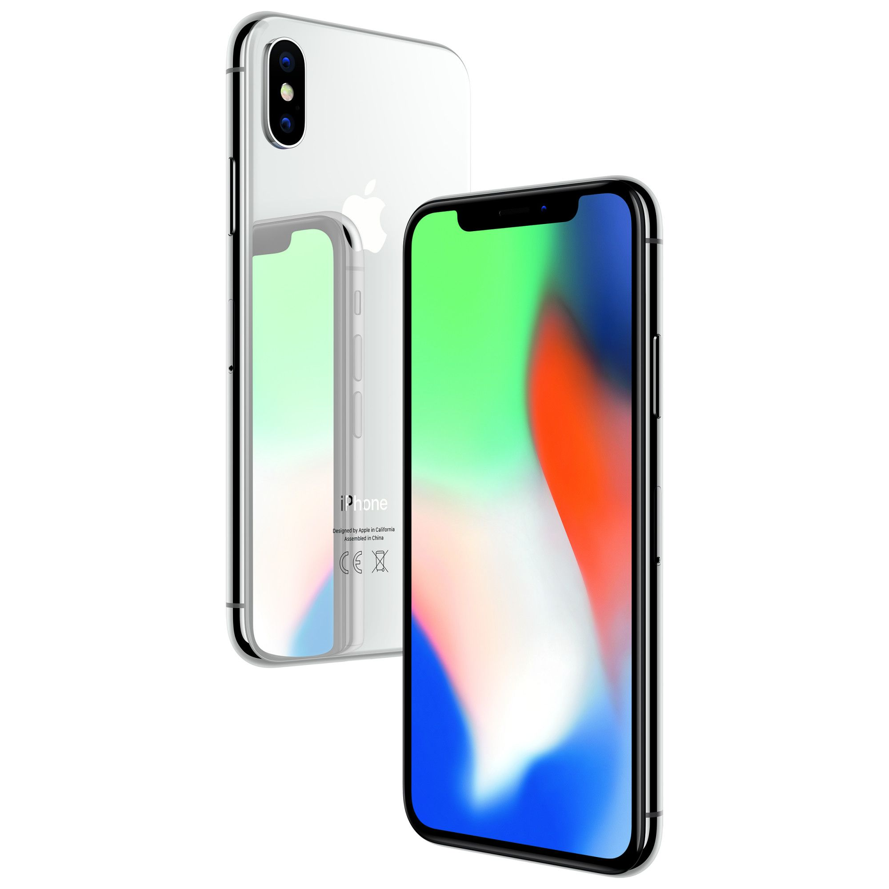

Introducing all new Iphone X
Apple has launched it’s first bezel less phone which has created a lot of hype in the world. Apple has done a major design change to iPhone X. In India iPhone X started at 6 pm IST. As usual there were dozens of people lining up outside stores ,waiting in ques for the iPhone.

Pricing for the iPhone X in India starts at Rs. 89,000 for the 64GB version, and 256GB version is priced at Rs. 1,02,000. The iPhone will be available in Silver and Space Grey colors.
iPhone X is the company’s bezel less phone and
- Has a 5.8-inch Super Retina display,
- Has the most awaited Face ID,
- Supports Qi wireless charging,
- Comes with all glass and surgical-grade stainless steel body,
- It also comes with IP 67 water and dust resistance,
- At the back there are two 12-megapixel cameras with OIS. In the front there is a 7-megapixel HD camera.
- Powering up the device there is A11 Bionic chip which comes with neural engine which supports machine learning, augmented reality and helps in 3D gaming.